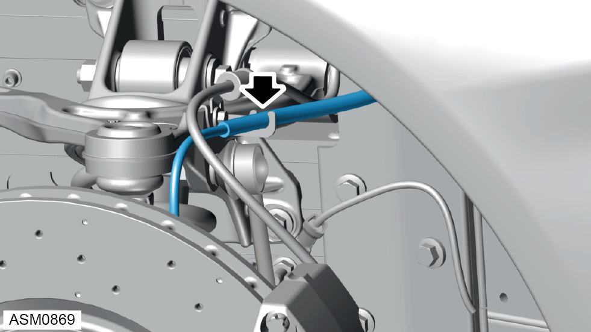
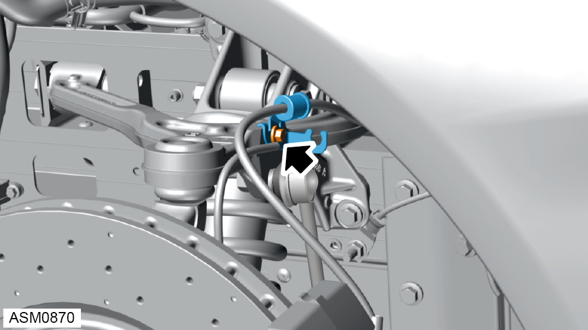
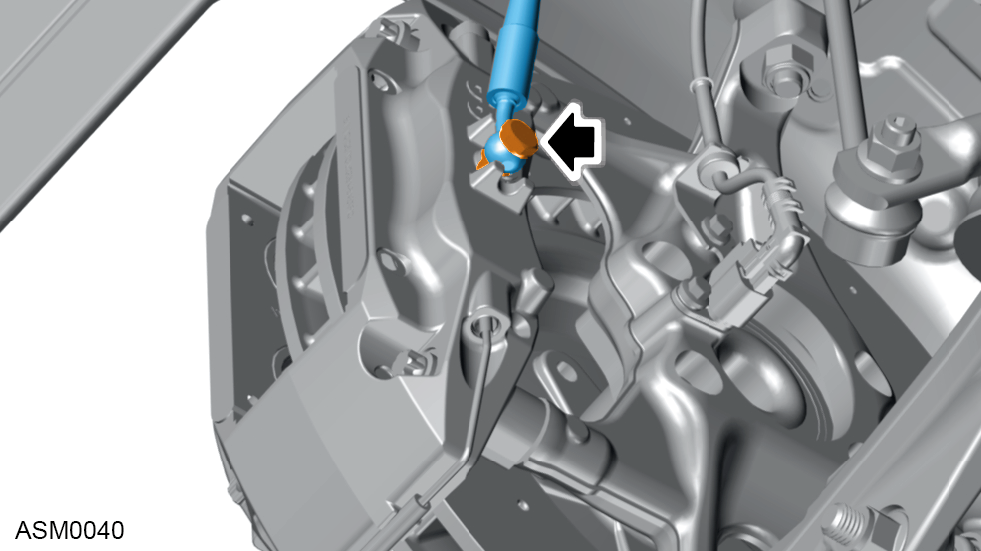
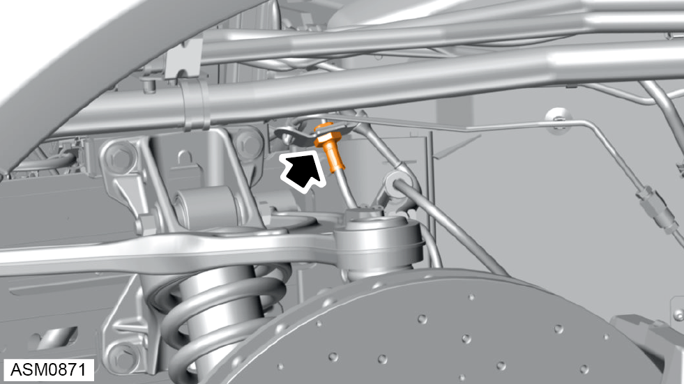
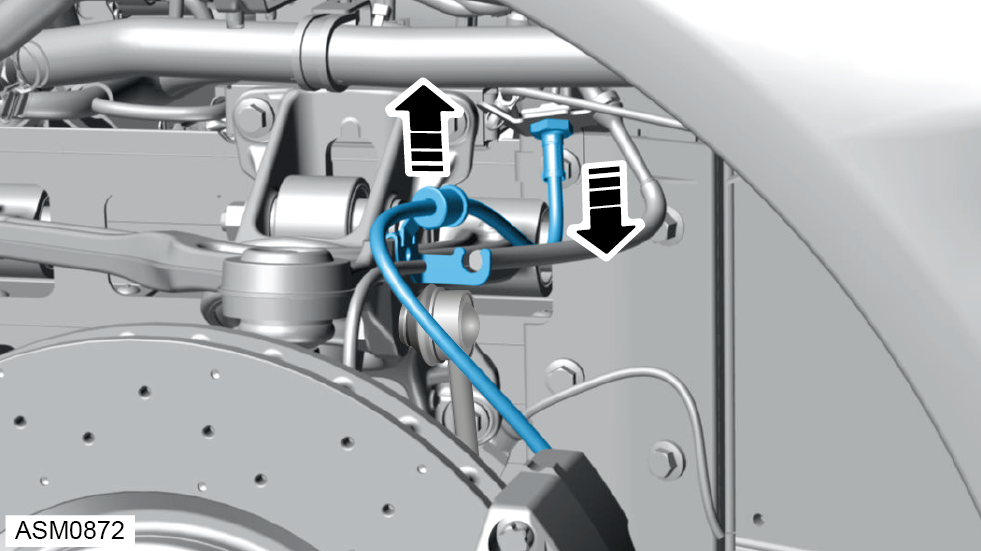

Removal




CAUTION: Brake fluid will discharge from brake hose when removing banjo bolt. Use a container to collect brake fluid.
CAUTION: Do not allow brake fluid to contact lower arm ball joint.
NOTE: Always record quantity and fitted position of washers.


CAUTION: Plug pipe connections to prevent fluid loss and ingress of moisture or dirt.
CAUTION: If brake fluid is spilt on the paintwork wash off immediately with clean water.